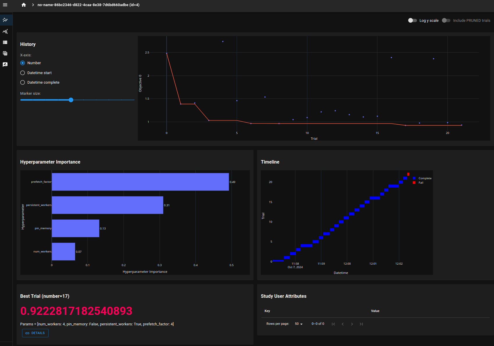

Parameter Sweeping
For parameter sweeps, py-gen-ml generates a Pydantic base model that replaces the types in the original config with structures that allow for defining the sampling space for each parameter.
The sweep config is then passed to a py_gen_ml.OptunaSampler which will sample the parameter space and return a patch that can be applied to a base config.
Your training code shouldn't have to be changed for a parameter sweep. It will receive the modified config as input and can remain oblivious to the fact that it has been sampled from a larger space.
Defining a parameter sweep
Let's do a benchmark on how to iterate throug a torch.utils.data.DataLoader as fast as possible.
The schema
We will define a simple schema with some parameter that influence the dataloader.
| // dataloader.proto
syntax = "proto3";
package dataloader;
// DataLoader configuration
message DataLoaderConfig {
// Batch size
int32 batch_size = 1;
// Number of workers
int32 num_workers = 2;
// Pin memory
bool pin_memory = 3;
// Persistent workers
bool persistent_workers = 4;
// Prefetch factor
int32 prefetch_factor = 5;
}
|
When we run py-gen-ml it will generate a Pydantic model for parameter sweeps for us.
| import typing
import py_gen_ml as pgml
from . import dataloader_patch as patch
from . import dataloader_base as base
class DataLoaderConfigSweep(pgml.Sweeper[patch.DataLoaderConfigPatch]):
"""DataLoader configuration"""
batch_size: pgml.IntSweep | None = None
"""Batch size"""
num_workers: pgml.IntSweep | None = None
"""Number of workers"""
pin_memory: pgml.BoolSweep | None = None
"""Pin memory"""
persistent_workers: pgml.BoolSweep | None = None
"""Persistent workers"""
prefetch_factor: pgml.IntSweep | None = None
"""Prefetch factor"""
DataLoaderConfigSweepField = typing.Union[
DataLoaderConfigSweep,
pgml.NestedChoice[DataLoaderConfigSweep, patch.DataLoaderConfigPatch], # type: ignore
]
|
You can see that it replaced the types in the original config with structures that allow for defining the sampling space for each parameter. The pgml.IntSweep type allows for several sampling strategies:
- Uniform sampling: sample uniformly from a range by specifying
low, high and optionally step.
- Discrete sampling: sample from a list of discrete values by specifying
options.
The pgml.BoolSweep type allows for sampling from a boolean space.
The base config
To run a benchmark we need a base config. Any sweeps will be applied to the base config by overlaying the sampled parameters.
The defaultYAML config is given below:
| batch_size: 32
prefetch_factor: 2
pin_memory: true
persistent_workers: true
num_workers: 2
|
The script
We will load this config in the following script:
| @app.command()
def run(
config_paths: list[str] = typer.Option(..., help='Paths to config files'),
sweep_paths: list[str] = typer.Option(default_factory=list, help='Paths to sweep files'),
num_trials: int = typer.Option(50, help='Number of trials to run')
) -> None:
dataloader_config = DataLoaderConfig.from_yaml_files(config_paths)
if len(sweep_paths) == 0:
dataloader_speed_benchmark(dataloader_config, num_iters=10)
return
sweep_config = DataLoaderConfigSweep.from_yaml_files(sweep_paths)
def objective(trial: optuna.Trial) -> float:
sampler = pgml.OptunaSampler(trial=trial)
patch = sampler.sample(sweep_config)
return dataloader_speed_benchmark(dataloader_config.merge(patch), num_iters=10)
study = optuna.create_study(storage='sqlite:///sweep_dataloader.db', direction='minimize', pruner=RepeatPruner())
study.optimize(objective, n_trials=num_trials)
print(f'Best value: {study.best_value} (params: {study.best_params})')
|
- Line 3: the path to the config can be passed as a CLI option
- Line 7: we parse the config file
- line 9, 10: if there is no sweep file given, we run a benchmark on the base config
The sweep config
Next, we'll define a minimalistic sweep config to sweep over the batch size.
| batch_size:
options:
- 32
- 64
|
In the run function we load this sweep config and set a few things related to Optuna.
| @app.command()
def run(
config_paths: list[str] = typer.Option(..., help='Paths to config files'),
sweep_paths: list[str] = typer.Option(default_factory=list, help='Paths to sweep files'),
num_trials: int = typer.Option(50, help='Number of trials to run')
) -> None:
dataloader_config = DataLoaderConfig.from_yaml_files(config_paths)
if len(sweep_paths) == 0:
dataloader_speed_benchmark(dataloader_config, num_iters=10)
return
sweep_config = DataLoaderConfigSweep.from_yaml_files(sweep_paths)
def objective(trial: optuna.Trial) -> float:
sampler = pgml.OptunaSampler(trial=trial)
patch = sampler.sample(sweep_config)
return dataloader_speed_benchmark(dataloader_config.merge(patch), num_iters=10)
study = optuna.create_study(storage='sqlite:///sweep_dataloader.db', direction='minimize', pruner=RepeatPruner())
study.optimize(objective, n_trials=num_trials)
print(f'Best value: {study.best_value} (params: {study.best_params})')
|
- Line 4: add a CLI option for the sweep config
- Line 13: load the sweep config
- Line 15-18: define the objective function. This is the function that will be optimized. It takes a
trial object, samples the parameters for the dataloader and returns the result of the benchmark.
- Line 20: create a new study
- Line 21: run the study for a given amount of trials
We can now run the sweep with the following command:
| python sweep_dataloader.py \
--config_paths \
configs/base/default.yaml \
--sweep_paths \
configs/sweep/batch_size.yaml \
--num_trials 2
|
You will see something like the following:
| [I 2024-10-07 11:10:54,448] A new study created in RDB with name: no-name-724460b6-177e-4750-b046-15627aad8711
Files already downloaded and verified
Time taken: 1.173576545715332
[I 2024-10-07 11:11:07,083] Trial 0 finished with value: 1.173576545715332 and parameters: {'batch_size': 64}. Best is trial 0 with value: 1.173576545715332.
Files already downloaded and verified
Time taken: 1.3076978921890259
[I 2024-10-07 11:11:21,024] Trial 1 finished with value: 1.3076978921890259 and parameters: {'batch_size': 32}. Best is trial 0 with value: 1.173576545715332.
Best value: 1.173576545715332 (params: {'batch_size': 64})
|
Benchmark code
The code that actually runs the benchmark is the following:
| def dataloader_speed_benchmark(config: DataLoaderConfig, num_iters: int = 100) -> float:
torch.cuda.empty_cache()
dataloader = torch.utils.data.DataLoader(
get_dataset(),
batch_size=config.batch_size,
num_workers=config.num_workers,
pin_memory=config.pin_memory,
persistent_workers=config.persistent_workers,
prefetch_factor=config.prefetch_factor
)
has_started = False
for i in range(num_iters):
for images, labels in dataloader:
if not has_started: # only start timing after the first iteration
has_started = True
start_time = time.time()
images.to('cuda')
labels.to('cuda')
torch.cuda.synchronize()
end_time = time.time()
time_per_epoch = (end_time - start_time) / num_iters
print(f'Time taken: {time_per_epoch}')
|
Full sweep
A more elaborate sweep can be configured as follows:
| batch_size: 64
num_workers:
options:
- 1
- 2
- 4
persistent_workers:
options:
- true
- false
pin_memory:
options:
- true
- false
prefetch_factor:
options:
- 1
- 2
- 4
|
We'll keep the batch size fixed at 64 and sweep over the other parameters.
| python sweep_dataloader.py \
--config_paths \
configs/base/default.yaml \
--sweep_paths \
configs/sweep/full.yaml \
--num_trials 20
|
After running this for a while, open up Optuna dashboard to see the results:
| optuna-dashboard sqlite:///sweep_dataloader.db
|
It will show you a web interface to inspect the results. Here's what it looks like:

You can then quickly see the optimal set of parameters in the bottom left corner.
Other sweep types
Below, we give an overview of how built in types and custom types map to the different sampling strategies.
Built-in types
pgml.IntSweep
For an int field, pgml.IntSweep will offer the following sampling strategies:
- Uniform sampling:
low, high and optionally step must be set.
- Discrete sampling:
options must be set.
- Fixed: just provide an int
Imagine we have the following schema:
| message Example {
int32 int_field = 1;
}
|
This allows us to create any of the following YAML files:
| int_field:
low: 1
high: 10
step: 1
|
| int_field:
options:
- 1
- 2
- 3
|
pgml.FloatSweep
For a float field, pgml.FloatSweep will offer the following sampling strategies:
- Uniform sampling:
low, high and optionally step must be set.
- Log uniform sampling:
log_low, log_high must be set.
- Discrete sampling:
options must be set.
- Fixed: just provide a float
Imagine we have the following schema:
| message Example {
float float_field = 1;
}
|
This allows us to create any of the following YAML files:
| float_field:
low: 1.0
high: 10.0
step: 1.0
|
| float_field:
log_low: 1.0
log_high: 10.0
|
| float_field:
options:
- 1.0
- 2.0
- 3.0
|
pgml.BoolSweep
For a bool field, pgml.BoolSweep will offer the following sampling strategies:
- Choice: provide a list of bools to choose from
- Fixed: just provide a bool
Imagine we have the following schema:
| message Example {
bool bool_field = 1;
}
|
This allows us to create any of the following YAML files:
| bool_field:
options:
- true
- false
|
pgml.StringSweep
For a string field, pgml.StringSweep will offer the following sampling strategies:
- Choice: provide a list of strings to choose from
- Fixed: just provide a string
Imagine we have the following schema:
| message Example {
string string_field = 1;
}
|
This allows us to create any of the following YAML files:
| string_field:
options:
- hello
- world
|
pgml.BytesSweep
For a bytes field, pgml.BytesSweep will offer the following sampling strategies:
- Choice: provide a list of bytes to choose from
- Fixed: just provide bytes
Imagine we have the following schema:
| message Example {
bytes bytes_field = 1;
}
|
This allows us to create any of the following YAML files:
| bytes_field:
options:
- hello
- world
|
Custom types
Nested configs
With nested configs, the ways to sweep are slightly different. Let's say we have the following schema:
| message Config {
int32 int_field = 1;
}
message Example {
Config config_field = 1;
}
|
For the config_field we have the following strategies:
- Sweep: just provide one sweep for the
config_field
- Nested sweep: provide several sweeps for the
config_field
This allows us to create any of the following YAML files:
| Sweep |
|---|
| config_field:
int_field:
low: 1
high: 10
step: 1
|
| Nested sweep |
|---|
| config_field:
nested_options:
first:
int_field:
low: 1
high: 10
step: 1
second:
int_field:
options:
- 1
- 2
- 3
|
For the nested sweep, we'll sample categorically between first and second. We then sample uniformly between 1 and 10 for the int_field in case of first and choose from 1, 2 or 3 for the int_field in case of second.
Enums
For an enum field, py-gen-ml generates a type that enables the following sampling strategies:
- Choice: provide a list of enums to choose from
- Fixed: just provide an enum
Imagine we have the following schema:
| enum Color {
RED = 0;
GREEN = 1;
BLUE = 2;
}
message Example {
Color color_field = 1;
}
|
This allows us to create any of the following YAML files:
| color_field:
options:
- RED
- GREEN
- BLUE
|